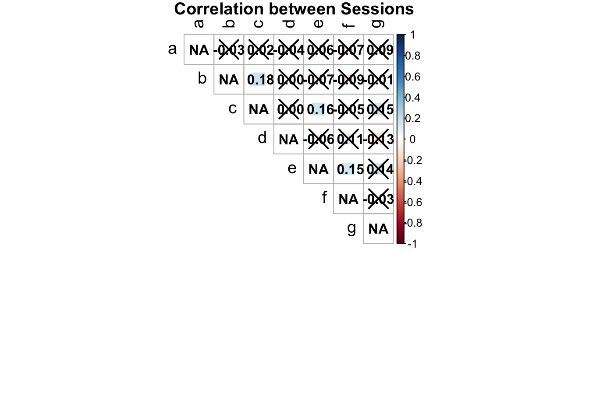
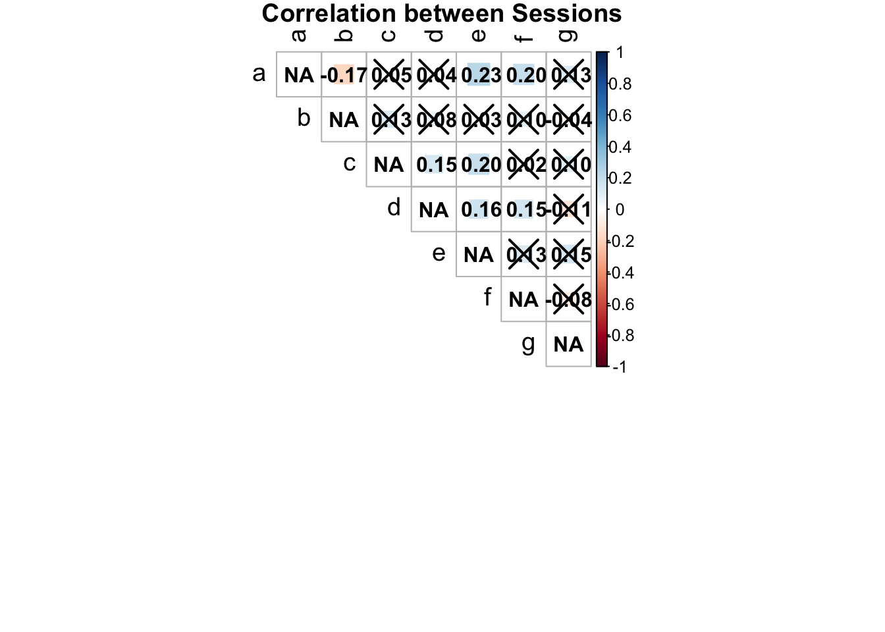
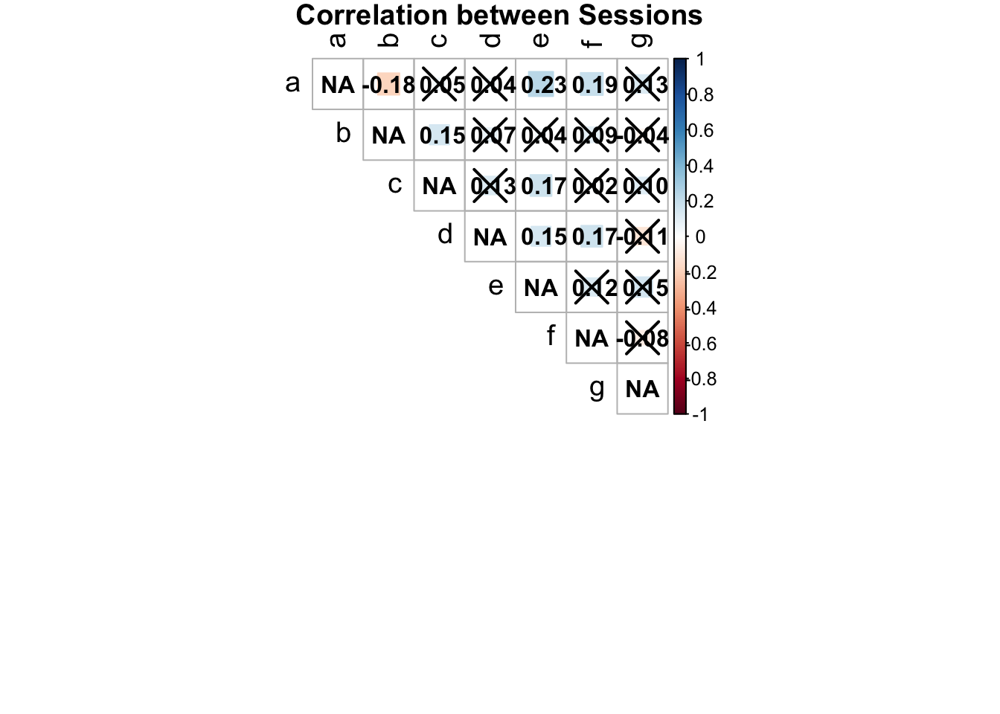
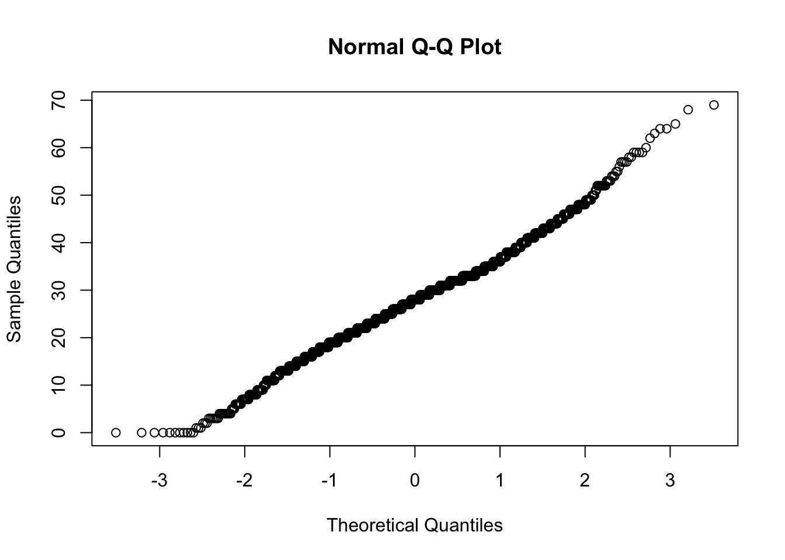
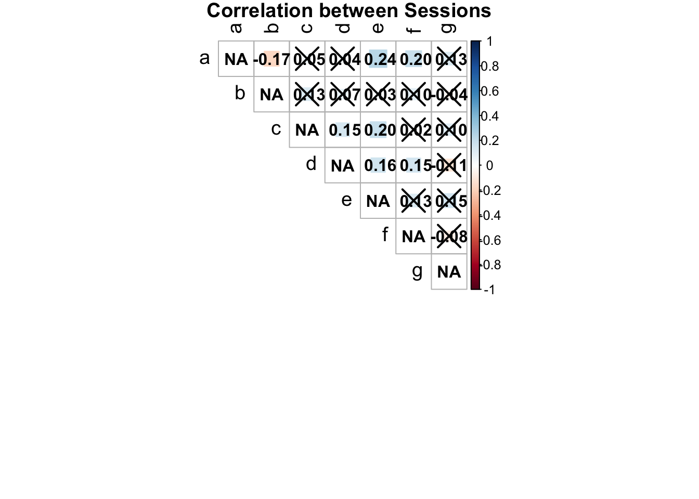
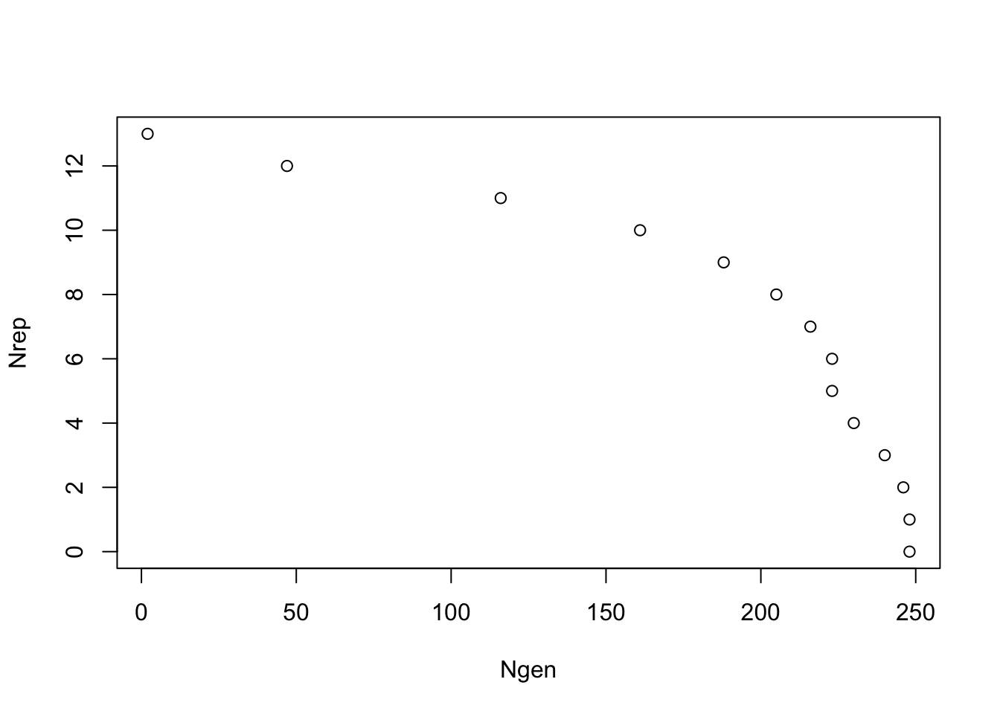
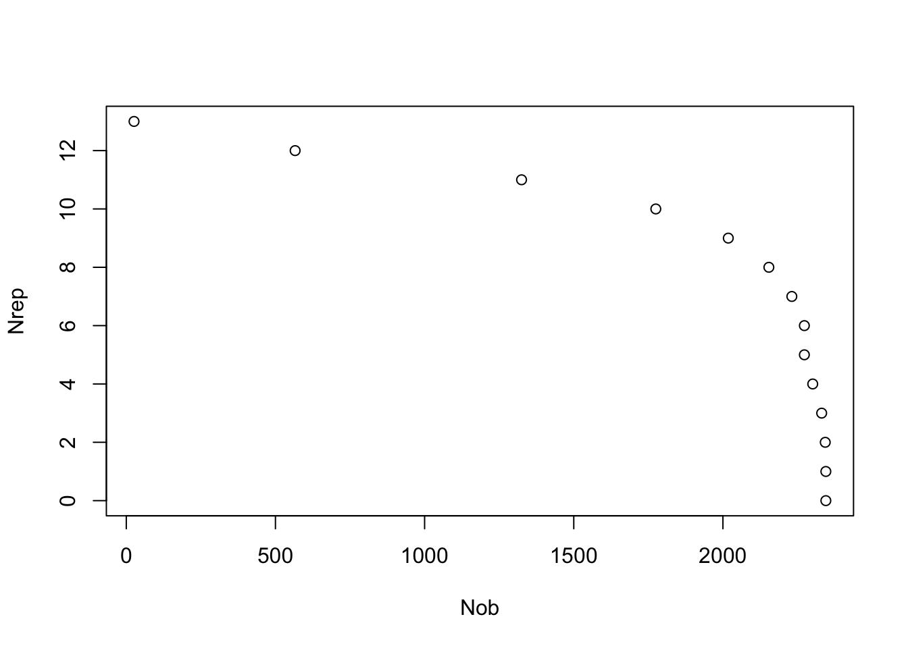
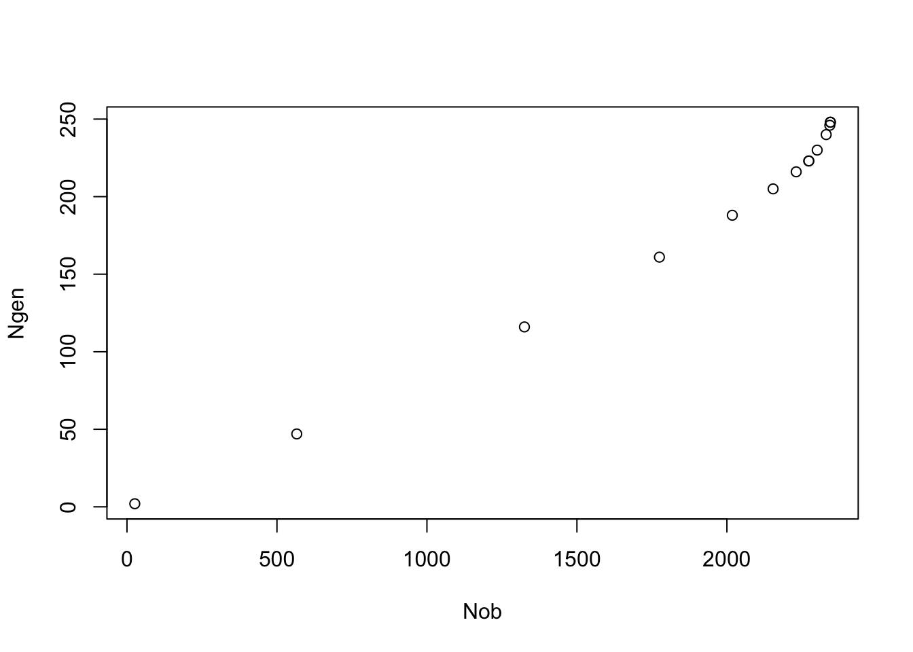

suppressPackageStartupMessages(library("tidyverse"))
suppressPackageStartupMessages(library("lme4"))
suppressPackageStartupMessages(library("Hmisc"))
suppressPackageStartupMessages(library("corrplot"))filtering the dataset
fix me: reformuler les parties texte
fix me correlation moyenne?
First I create a function giving the broad sense heritability and the number of genotypes of a given dataset
Raw dataset
data250pisum_00 <- read.csv("../../../01.data/2023_screen_specifics_251genotypes/01.acyrthosiphon_pisum_P123amp_on_faba_collection/acyrthospipon_pisum_fecundity_on_faba_collection.csv", stringsAsFactors = FALSE) %>%
mutate(genotype = as.factor(genotype)) %>% mutate(session = as.factor(session)) %>% mutate(short_code = as.factor(short_code))
analyse_output(data = data250pisum_00)$heritability
[1] 0.1712183
$number_of_genotypes
[1] 251
$number_of_notation
[1] 3027Before filtering the dataset we have 251 genotypes
Missing data
data250pisum_01 <- data250pisum_00 %>% filter(!is.na(larvae_total_number))
data250pisum_01$genotype <- droplevels(data250pisum_01$genotype)
analyse_output(data = data250pisum_01)$heritability
[1] 0.1712183
$number_of_genotypes
[1] 249
$number_of_notation
[1] 2650# Call the function to generate and display the correlation plot
analyse_data_correlation(data250pisum_01,
group_cols = c("short_code", "session"),
value_col = "larvae_total_number")
$corr
a b c d e f
a NA -0.031912486 0.015637973 -0.043517570 0.05805198 -0.07191973
b -0.03191249 NA 0.178586583 0.001257195 -0.07078066 -0.09290025
c 0.01563797 0.178586583 NA 0.001351829 0.16208598 -0.04858741
d -0.04351757 0.001257195 0.001351829 NA -0.06132069 0.11100094
e 0.05805198 -0.070780657 0.162085976 -0.061320688 NA 0.14568675
f -0.07191973 -0.092900252 -0.048587410 0.111000939 0.14568675 NA
g 0.08631322 -0.013598273 0.153121952 -0.129186991 0.14121134 -0.02554160
g
a 0.08631322
b -0.01359827
c 0.15312195
d -0.12918699
e 0.14121134
f -0.02554160
g NA
$corrPos
xName yName x y corr p.value
1 b a 2 7 -0.031912486 0.641702581
2 c a 3 7 0.015637973 0.824316974
3 c b 3 6 0.178586583 0.009503203
4 d a 4 7 -0.043517570 0.525641191
5 d b 4 6 0.001257195 0.985343913
6 d c 4 5 0.001351829 0.984576519
7 e a 5 7 0.058051981 0.389349116
8 e b 5 6 -0.070780657 0.300425095
9 e c 5 5 0.162085976 0.019630293
10 e d 5 4 -0.061320688 0.368685048
11 f a 6 7 -0.071919731 0.300745263
12 f b 6 6 -0.092900252 0.185216686
13 f c 6 5 -0.048587410 0.494463762
14 f d 6 4 0.111000939 0.111322017
15 f e 6 3 0.145686750 0.035310450
16 g a 7 7 0.086313224 0.356906781
17 g b 7 6 -0.013598273 0.884304035
18 g c 7 5 0.153121952 0.111925251
19 g d 7 4 -0.129186991 0.163244819
20 g e 7 3 0.141211338 0.125556765
21 g f 7 2 -0.025541598 0.791113004
$arg
$arg$type
[1] "upper"Few genotypes did not germinates, therefore we only have 249 genotypes. Heritability is quite low, only 0.17
Remove row with no adult alive
We chose to remove all data from plants on which no adult aphid was found. This desision was made to get rid of biais and only asses the reproduction ability of the aphid. When the adult aphid dies the number of larvae will drop but only because the adult stayed less longer on the plant and not because the plant was not suitable for the reproduction.
data250pisum_02<- data250pisum_01 %>% filter(adult_alive != "0") #remove if no adult
data250pisum_02$genotype <- droplevels(data250pisum_02$genotype)
analyse_output(data = data250pisum_02)$heritability
[1] 0.3687613
$number_of_genotypes
[1] 248
$number_of_notation
[1] 2345# Call the function to generate and display the correlation plot
analyse_data_correlation(data250pisum_02,
group_cols = c("short_code", "session"),
value_col = "larvae_total_number")
$corr
a b c d e f
a NA -0.17467538 0.04812256 0.03606404 0.23243194 0.19637878
b -0.17467538 NA 0.12522089 0.07768043 0.03223696 0.09736376
c 0.04812256 0.12522089 NA 0.14583806 0.19556091 0.02140757
d 0.03606404 0.07768043 0.14583806 NA 0.16183279 0.15419905
e 0.23243194 0.03223696 0.19556091 0.16183279 NA 0.12853976
f 0.19637878 0.09736376 0.02140757 0.15419905 0.12853976 NA
g 0.12595819 -0.04445849 0.10227183 -0.11291144 0.15174808 -0.07692829
g
a 0.12595819
b -0.04445849
c 0.10227183
d -0.11291144
e 0.15174808
f -0.07692829
g NA
$corrPos
xName yName x y corr p.value
1 b a 2 7 -0.17467538 0.0136030901
2 c a 3 7 0.04812256 0.5074357676
3 c b 3 6 0.12522089 0.0811164927
4 d a 4 7 0.03606404 0.6203852840
5 d b 4 6 0.07768043 0.2880309658
6 d c 4 5 0.14583806 0.0482300046
7 e a 5 7 0.23243194 0.0007291745
8 e b 5 6 0.03223696 0.6520909524
9 e c 5 5 0.19556091 0.0058871227
10 e d 5 4 0.16183279 0.0249238278
11 f a 6 7 0.19637878 0.0058044054
12 f b 6 6 0.09736376 0.1814225307
13 f c 6 5 0.02140757 0.7676078056
14 f d 6 4 0.15419905 0.0361115686
15 f e 6 3 0.12853976 0.0725737899
16 g a 7 7 0.12595819 0.2026341719
17 g b 7 6 -0.04445849 0.6540583905
18 g c 7 5 0.10227183 0.3112904009
19 g d 7 4 -0.11291144 0.2514560764
20 g e 7 3 0.15174808 0.1186870929
21 g f 7 2 -0.07692829 0.4491527429
$arg
$arg$type
[1] "upper"qqnorm(data250pisum_02$larvae_total_number)this filtering led to the loss of 1 genotype but increased broad sense heritability up to 0.36
filtering of genotypes with less than 6 repetitions
Now the question is :should we filter genotypes for which we have less than
6 repetition. When we selected the genotypes to keep for the metabolomic and transcriptomic analysis, it made sense to select only genotypes that we
observed at least 6 times to unsure that we select a genotype stable across
observations. with he folowing code:
data250pisum_03 <- data250pisum_02 %>%
group_by(short_code) %>% # Group by genotype
filter(n() >= 6) %>% # Keep only groups with 6 or more repetitions
ungroup()
data250pisum_03$genotype <- droplevels(data250pisum_03$genotype)
analyse_output(data = data250pisum_03)$heritability
[1] 0.3685556
$number_of_genotypes
[1] 223
$number_of_notation
[1] 2273# Call the function to generate and display the correlation plot
analyse_data_correlation(data250pisum_03,
group_cols = c("short_code", "session"),
value_col = "larvae_total_number")
$corr
a b c d e f
a NA -0.18161025 0.04834397 0.04204903 0.23296115 0.19330899
b -0.18161025 NA 0.14963880 0.07067930 0.04417105 0.09107269
c 0.04834397 0.14963880 NA 0.12686139 0.17471479 0.02304584
d 0.04204903 0.07067930 0.12686139 NA 0.14631662 0.17380227
e 0.23296115 0.04417105 0.17471479 0.14631662 NA 0.12356719
f 0.19330899 0.09107269 0.02304584 0.17380227 0.12356719 NA
g 0.12595819 -0.04445849 0.10227183 -0.11291144 0.15174808 -0.07692829
g
a 0.12595819
b -0.04445849
c 0.10227183
d -0.11291144
e 0.15174808
f -0.07692829
g NA
$corrPos
xName yName x y corr p.value
1 b a 2 7 -0.18161025 0.0112671748
2 c a 3 7 0.04834397 0.5088707877
3 c b 3 6 0.14963880 0.0398662822
4 d a 4 7 0.04204903 0.5698288437
5 d b 4 6 0.07067930 0.3417211726
6 d c 4 5 0.12686139 0.0896909791
7 e a 5 7 0.23296115 0.0009011027
8 e b 5 6 0.04417105 0.5408327479
9 e c 5 5 0.17471479 0.0148285544
10 e d 5 4 0.14631662 0.0451120162
11 f a 6 7 0.19330899 0.0075344399
12 f b 6 6 0.09107269 0.2151131991
13 f c 6 5 0.02304584 0.7522980246
14 f d 6 4 0.17380227 0.0192885087
15 f e 6 3 0.12356719 0.0868844583
16 g a 7 7 0.12595819 0.2026341719
17 g b 7 6 -0.04445849 0.6540583905
18 g c 7 5 0.10227183 0.3112904009
19 g d 7 4 -0.11291144 0.2514560764
20 g e 7 3 0.15174808 0.1186870929
21 g f 7 2 -0.07692829 0.4491527429
$arg
$arg$type
[1] "upper"qqnorm(data250pisum_03$larvae_total_number)
However, we lose some genotypes and data, which can reduce statistical power. This does not necessarily lead to an increase in heritability; in our specific case, the opposite occur.
data250pisum_04 <- data250pisum_02 %>%
group_by(short_code) %>% # Group by genotype
filter(n() >= 3) %>% # Keep only groups with 6 or more repetitions
ungroup()
data250pisum_04$genotype <- droplevels(data250pisum_04$genotype)
analyse_output(data = data250pisum_04)$heritability
[1] 0.369408
$number_of_genotypes
[1] 240
$number_of_notation
[1] 2331# Call the function to generate and display the correlation plot
analyse_data_correlation(data250pisum_04,
group_cols = c("short_code", "session"),
value_col = "larvae_total_number")
$corr
a b c d e f
a NA -0.17265414 0.04812256 0.03597042 0.23647639 0.19637878
b -0.17265414 NA 0.12522089 0.07358079 0.03223696 0.09736376
c 0.04812256 0.12522089 NA 0.14583806 0.19556091 0.02140757
d 0.03597042 0.07358079 0.14583806 NA 0.16183279 0.15419905
e 0.23647639 0.03223696 0.19556091 0.16183279 NA 0.12853976
f 0.19637878 0.09736376 0.02140757 0.15419905 0.12853976 NA
g 0.12595819 -0.04445849 0.10227183 -0.11291144 0.15174808 -0.07692829
g
a 0.12595819
b -0.04445849
c 0.10227183
d -0.11291144
e 0.15174808
f -0.07692829
g NA
$corrPos
xName yName x y corr p.value
1 b a 2 7 -0.17265414 0.0150003071
2 c a 3 7 0.04812256 0.5074357676
3 c b 3 6 0.12522089 0.0811164927
4 d a 4 7 0.03597042 0.6222205828
5 d b 4 6 0.07358079 0.3169173153
6 d c 4 5 0.14583806 0.0482300046
7 e a 5 7 0.23647639 0.0006025018
8 e b 5 6 0.03223696 0.6520909524
9 e c 5 5 0.19556091 0.0058871227
10 e d 5 4 0.16183279 0.0249238278
11 f a 6 7 0.19637878 0.0058044054
12 f b 6 6 0.09736376 0.1814225307
13 f c 6 5 0.02140757 0.7676078056
14 f d 6 4 0.15419905 0.0361115686
15 f e 6 3 0.12853976 0.0725737899
16 g a 7 7 0.12595819 0.2026341719
17 g b 7 6 -0.04445849 0.6540583905
18 g c 7 5 0.10227183 0.3112904009
19 g d 7 4 -0.11291144 0.2514560764
20 g e 7 3 0.15174808 0.1186870929
21 g f 7 2 -0.07692829 0.4491527429
$arg
$arg$type
[1] "upper"qqnorm(data250pisum_04$larvae_total_number)dfb <- data.frame(Column1 = character(), Column2 = character(), Column3 = character())
for (i in 0:13) {
data <- data250pisum_02 %>%
group_by(short_code) %>% # Group by genotype
filter(n() >= i) %>% # Keep only groups with i or more repetitions
ungroup()
data$genotype <- droplevels(data$genotype)
nlvl<-nlevels(data$genotype)
# Fit the model with a fixed formula
mod_h2 <- lmer(larvae_total_number ~ (1 | short_code) + (1 | session), data = data)
# Get the variance components
estimates <- as.data.frame(VarCorr(mod_h2))
# Extract the relevant variance components
genetic_variance <- estimates$vcov[1]
residual_variance <- estimates$vcov[3] # Adjust based on the placement of residual variance
# Get the number of levels for the 'session' random effect
nbE <- nlevels(data$session)
# Calculate heritability (h2)
h2 <- genetic_variance / (genetic_variance + (residual_variance / nbE))
nnotation<-nrow(data)
df <- data.frame(Nrep = i, Ngen = nlvl, H2 = h2, Nob = nnotation)
dfb<-rbind(df, dfb)
}boundary (singular) fit: see help('isSingular')plot(Nrep~Ngen, data =dfb)
plot(Nrep~H2, data =dfb)plot(Nrep~Nob, data = dfb)
plot(Ngen~Nob, data = dfb)
based on these results it seems appropriate to keep the >= 6 threshold